| 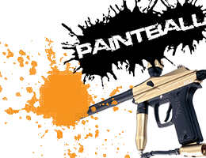 | 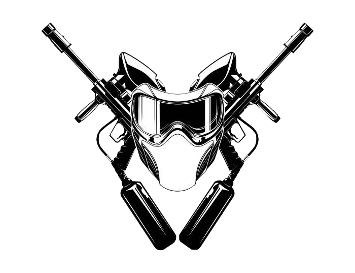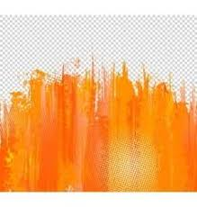 | |
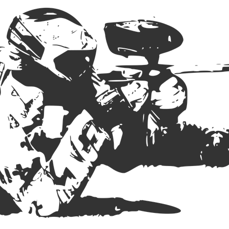 | |
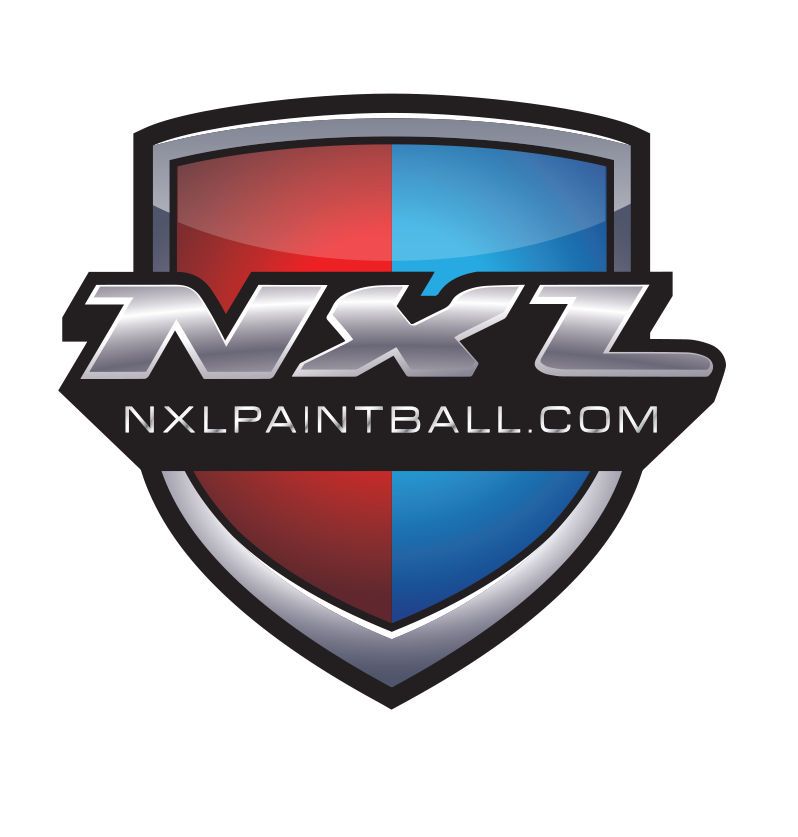 |
| Home | Get Started | tactics | Safety | Competition |
| 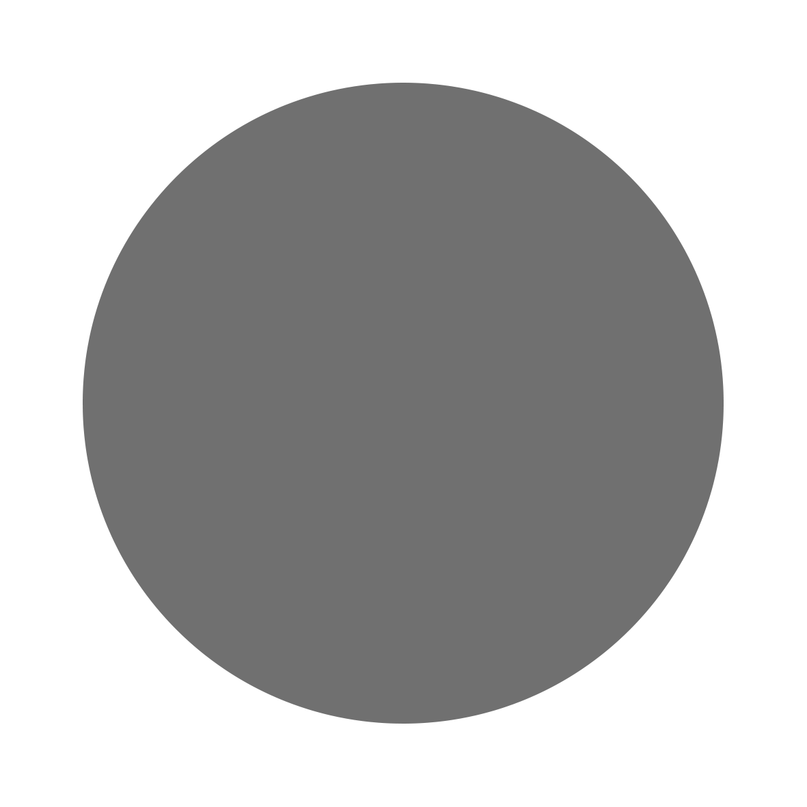 |
 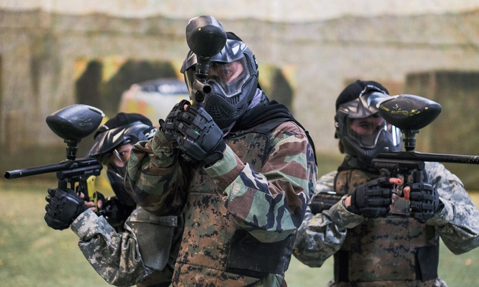 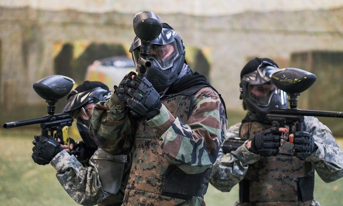 |
Get started You pressed this section because you just started or knew about paintball, you might think that paintball is not a sport, violent, and gun related. But in order for you to see the big picture of this sport, you need to understand this sport. Paintball is a competitive sport involving different physical movements, including running, sliding, climbing, jumping, etc. This sport also involves shooting spherical paint at the opposing team with airguns, or co2 powered guns, this is known as a paintball marker. Players wear protective gear to minimize impact from getting shot at, this is absolutely required. Players could be seriously injured if they don’t wear protective gear. This could happen, it can literally “knock your eye out”(See more in the section safety). Different games have different map setup, game modes, and type of play. Such as the traditional field, or the modern fields, which is setup using air pumped obstacles. This sports origin goes back to the 1970s, where the first guns were developed for use in forestry and agriculture. Foresters used the guns to mark certain trees (for research, planning trails). The guns were also used by farmers to mark cattle. And later farmers started shooting at each other for sport. But paintball didn’t really fully developed until 1981, where a real team was formed. This sport was than used for military and police practices, the military trained soldiers are trained using paintball for different exercises such as clearing buildings, they also increase the firepower of their equipment to make it as realistic as possible. Mainly, it lets soldiers and the police practice strategy, camouflage and the fine art of not getting shot. Later on the first team of paintball introduced this to the public and started to mass produce paintball equipment. Paintball games have two teams, either capture the flag, capture the checkpoint, or elimination. When players are out, they either are out permanently for the round, or return to the spawn point and get back to the game. Usually competitive paintball organizations and rounds allow one life per round, this makes it very realistic. Different types of arenas have different play style, such as urban, speedball, or in forest areas. Urban would be very similar to airsoft, or involves buildings or bug rooms and walls. Forest areas would be rented for play only, players in his arena would have to hide behind trees and bushes, called woodsball. Speedball is more for competitive paintball organizations such as NXL, each round goes by very fast, and there is always ten players, and instead of wearing camouflage, they were different colors to indicate teams. Speedball also uses airpumped obstacles instead of walls. The military do not use this kind of play, only well known teams and paintball organizations use this kind of play. Paintball players say its a sport because it's really workout. It involves quick thinking under pressure, quick movement, skill, tactics, and instinct. What also makes this sport a sport is team communication, usually communication in sports is verbal. But in this sport, you have to coordinate with your partner by visually seeing their movement and supporting your teammates using tactics in different situations. The only team verbal communication is before a session starts, you can talk about possible tactics that an opponent would use, also teammates have different roles, so you would have to coordinate with other teammates role in order to out gun an opponent and advance to reach the other side, or whatever the game mode. Also people may think it’s violent, its gun related. Sure, the military uses this sport for military drills, but there is a difference between these drills than the sport itself. The military and the police increase the power of the paintball marker to make it more realistic. But the sport common people play has less war aspects, you can rush to your opponent and get him out by surprising them while they are under your friends cover fire. This cannot be done in military drills, since in military arenas, platoons, or large groups of soldiers can cover fire and is hard to break front lines. Supply if your interested (Go to Safety and equipment section for the same paragraph) Paintball is sure considered an expensive sport. For starters, you have to reserve a location, purchase fees, rent fees, and the cost for your first game may range anywhere from $20 to $140. Also to get your own paintball supplies it would be expensive, guns vary in different prices with different qualities, the range of price is a little less than $99 to a little more than $300. $99 markers are usually the normal traditional ones. Tippmann markers (Ones that look like real guns) usually vary from $109 to about or more than $200! On Amazon, a paintball kit for beginners contains a tippmann marker, hopper, reload clip, reload belt, pipe and co2 tank can vary from $150 to more than $200. For professionals and people who are getting serious on paintball tournaments, I would recommend the Empire Axe. This marker is $350 itself, the reason why it’s expensive is it can switch through single fire, burst, and full auto. With an e-trigger it makes it very expensive. Helmets depends on its quality, high quality helmets can vary from $79 and $99 to something like $200. For full protection that protects the back of your head, the price is $25 to $50. For vests the price is $20 above. Also 2000 paintballs on Amazon is $37 to $45. Rental prices, including entry, marker, mask, vest, and suit can vary in different countries. Let’s take The Shack for example. Rental packages vary from $25 to $40, and a minimum of 500 paintballs is $20. |
|
Techniques, tactics, and tips Target shooting and reloading lot of people find it hard to aim with traditional paintball markers. The problem is it’s either that your a noob, or your just bad. Well, how to aim with a paintball gun? All you have to do is rest your shoulders on the co2 tank. Now here is where people make mistakes, people don’t tilt the gun until it touches the nose of the mask, well you have to. You may ask if the hopper (paint tank) is blocking your aim, but by tilting the gun, the hopper would not block your site. Some paintball markers have different hoppers, so not all guns require these steps. Reload clips are always located on the back of your waist. This makes playing very light, by doing so, you can do different techniques easier. To reload, you simply reach out to the back your waist and remove the hook from the loop (removing the velcro), then pull downwards to take out the clip. The next step is to take the clip and dump it in the hopper. Reloading is done in different ways in different playing styles. In Urban or woodsball, you can slowly do your reloading, than return the clip back in the velcro. But in speedball, everything is very fast. You have to quickly reload, than toss the clip aside and continue playing. Later these items would be returned back to you. In each round of speedball, a player can have a maximum of four to six clips, that is enough to last you about twelve minutes in a round. You can bring any amount of clips to local rounds (urban and forest areas). Usual and used paintball techniques This section describes techniques used by competitors in competitions formed by organizations such as the NXL. Playing the Snake Playing the snake is also used back in real warfare, but in speedball, it is used to travel low across the snake, or the lower bunker on the sides of a speedball field. Surviving a snake This term means to dominate a snake. This is a very important asset to your team. If you gain control of the snake, you can attack almost anywhere on the field. The football slide Sliding saves competitors often times in all kinds of situations. Sliding can be used when sprinting into a object, wall, or bunker. It can minimize chance of getting shot, this happens because you are making yourself a smaller target. Sliding also stops forward momentum into a object. The superman slide This term means to slide on your front body behind an object, it can be used anytime on the field if going full speed. Crouch This technique is used by all players, including the military and the police, speedball players, noobies, and others. This works because it makes you a smaller target when behind an obstacle. Don’t give your position away too soon When doing so, you can determine your opponents positions, set up tactics and communicate with your teammate. Also no one wants to waste paint to cause attention to yourself. Hide in good coverage This can be a problem to some people, for example hiding behind obstacles with holes or gaps between them can make you a easy target Communication and teamwork In this sport, teamwork is essential! Teammates can provide a ton of support, including cover fire, teammates can also help you when you are vulnerable to ambushes. The simple version of this section is with bad teammates, or no communication between teammates means that your on your own. This can affect gameplay, a good player with bad teammates cannot survive on the field. Work in pairs A simple and very effective tactic is to work in small groups (2 or 3 people). If one player is pinned down by the opposition, their partner can give covering fire from a different angle. Snap shooting Snap shooting is to peek out of an object for a little while to decrease of a chance to get shot at. Usual and used paintball tactics Leapfrogging: This is a term that you will hear many players talk about. Basically, you cover one another as you are advancing or retreating. The first player fires at the other team while the next player behind them runs for cover. This is repeated until the last person is safely covered or you have made advancement against the enemy. This tactic was adopted from the military and works really well. But all of your teammates will have to hold together to make it work. Just one person not doing their part can put the entire team at risk. This tactic is best used if all of the players on your team has practiced it first. Flanking: This is another great tactic that was taken from the military. While a few players work up the middle several others try to work their way around the other team in hopes of surprising them from the sides. This is a very effective move that has won many games of paintball in the past. Flanking is a bold move but it is one that is necessary to win the game. You might lose several players in the process but your team as a whole will survive and win the game. Cover fire rushing: This is a tactic used to make large advancements on the battlefield. Several of your teammates will fire their paintball guns rapidly at the other team while the rest of you rush the field. The rushers will use physical cover while they make their advancement. This is often used to intimidate the other team and get them to run from the advancement. False retreat: This is a sneaky tactic that some players use with great success. If you can convince the other team that your team is retreating they will often rush out into the open to take advantage of our retreat. But instead, what they will find on the other end of the battlefield is your team waiting for the kill. While some players might frown on this type of tactic, it just might help save your team from losing the game. Ambush: This is a very common paintball tactic that works very well. During an ambush, all of your teammates will take cover normally around an obstacle or trial way. Your team will lay in wait very quietly without making a sound. Once the other team has advanced into your area, you and your teammates open fire on the unexpecting team. This causes chaos and confusion and most of the time the entire team that gets ambushed is taken out of the game. You have to be very careful, however, not to get caught up in any crossfire that might occur during the confusion. With teamwork, you can dominate the field even if your just a starter. Some of these tactics can be hard to perform on the battlefield, but all you have to do is practice, practice makes perfect! |
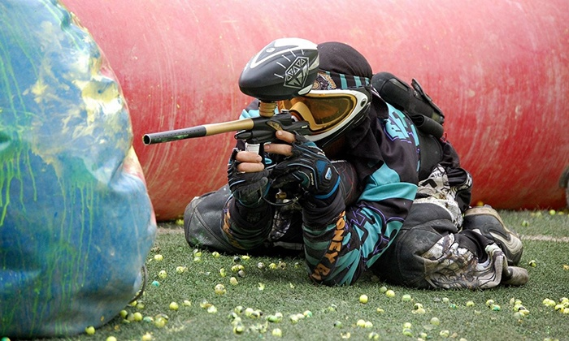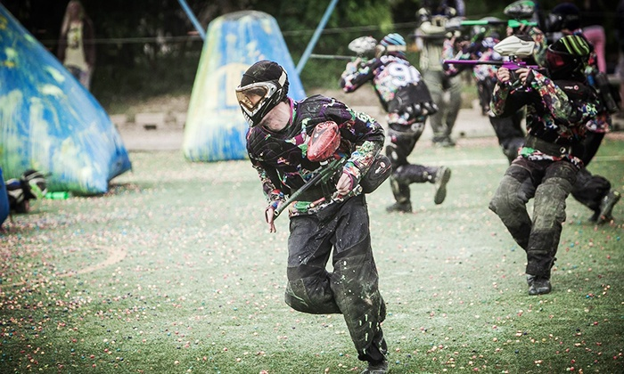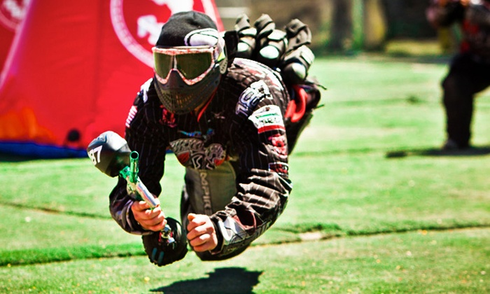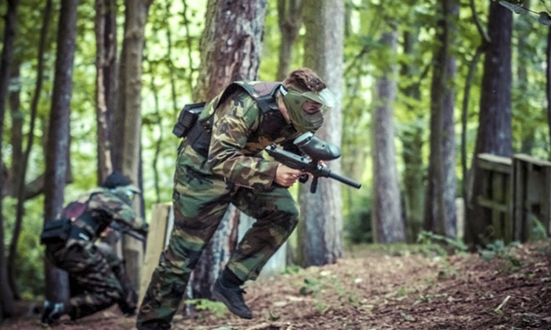 |
| 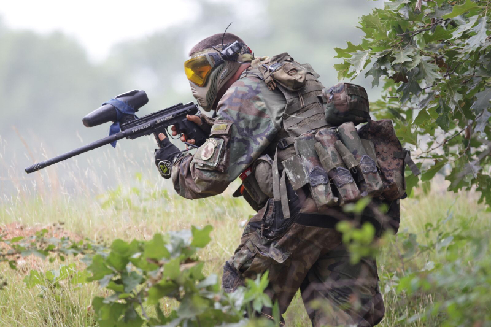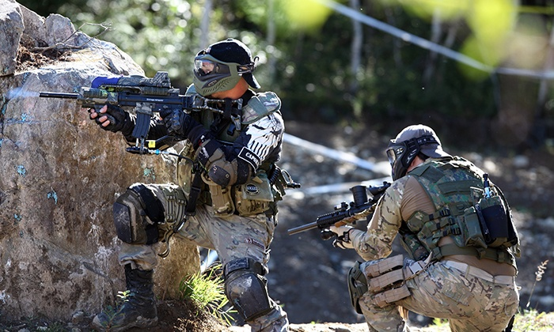 |
Safety and equipment This sport also involves shooting spherical paint at the opposing team with airguns, or co2 powered guns, this is known as a paintball marker. Players wear protective gear to minimize impact from getting shot at, this is absolutely required. Players could be seriously injured if they don’t wear protective gear. This could happen, it can literally can “knock your eye out”. Equipment can consist of a paintball marker, the hopper( the loader), mask/helmet, suit, gloves, and other supplies needed to play paintball. Safety also includes the equipment. The helmet is the most important protective gear, it prevents “knocking your eye out”. The suit also is important to protection. It minimizes impact when being hit and can protect you from getting dirty or hurt when performing different moves. Safety is number one in this game, some noobs sit in the same spot behind the same wall, so don’t get too excited to rush to their backs and shoot them on the back of their head! This can cause serious injuries to the victim, which you don’t want. Another VERY IMPORTANT THING is to NOT LIFT UP YOUR HELMET IN PLAY, you might get shot and again “knock your eye out”. Another thing is to NOT POINT THE GUN AT SOMEONE WITHOUT A GUN WHEN OUT OF COURT, A TEAMMATE, OR THE MARSHALL(the referee)!!! Actually, IT’S BETTER OFF TO NOT POINT AT ANYONE WHEN YOUR OUT OF THE ARENA!! This means that this rule is to test for gun safety, if you master this rule, you are a certified paintball gun owner. Another rule is to not shoot the paintball gun at someone regularly just for fun, or play this sport in public or whenever you want. This can cause serious trouble (The last thing you don’t want is to point a paintball gun at the police for fun NOT APPROVED!). Supply if your interested (Go to Get started section for the same paragraph) Paintball is sure considered an expensive sport. For starters, you have to reserve a location, purchase fees, rent fees, and the cost for your first game may range anywhere from $20 to $140. Also to get your own paintball supplies it would be expensive, guns vary in different prices with different qualities, the range of price is a little less than $99 to a little more than $300. $99 markers are usually the normal traditional ones. Tippmann markers (Ones that look like real guns) usually vary from $109 to about or more than $200! On Amazon, a paintball kit for beginners contains a tippmann marker, hopper, reload clip, reload belt, pipe and co2 tank can vary from $150 to more than $200. For professionals and people who are getting serious on paintball tournaments, I would recommend the Empire Axe. This marker is $350 itself, the reason why it’s expensive is it can switch through single fire, burst, and full auto. With an e-trigger it makes it very expensive. Helmets depends on its quality, high quality helmets can vary from $79 and $99 to something like $200. For full protection that protects the back of your head, the price is $25 to $50. For vests the price is $20 above. Also 2000 paintballs on Amazon is $37 to $45.Rental prices, including entry, marker, mask, vest, and suit can vary in different countries. Let’s take The Shack Paintball for example. Rental packages vary from $25 to $40, and a minimum of 500 paintballs is $20. |